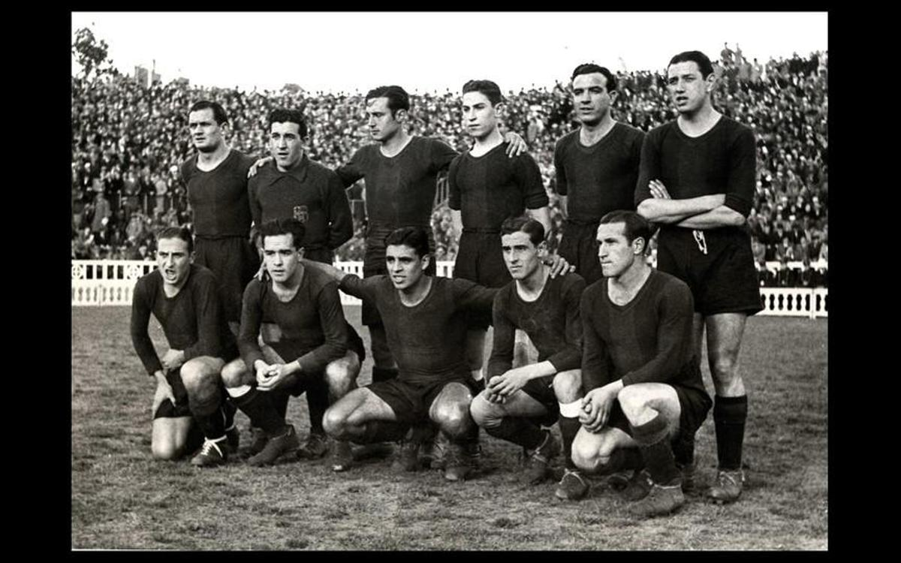
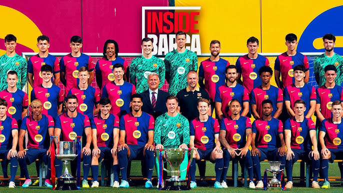

El Barça fue fundado el 29 de noviembre de 1899 por un grupo de futbolistas liderados por el suizo Joan Gamper (quien luego cambió su nombre a Hans Gamper).El primer partido oficial lo jugaron en 1900 contra un equipo de expatriados ingleses.En 1902 ganaron su primer título: la Copa Macaya (un antecesor de la Copa Cataluña).En 1920, el club adoptó oficialmente el nombre Futbol Club Barcelona y comenzó a crecer en popularidad.

En los años 20 y 30, el Barça ganó varios campeonatos regionales y consolidó su identidad catalana.Durante la Guerra Civil Española (1936-1939), el club sufrió mucho: su presidente Josep Sunyol fue fusilado por las tropas franquistas, y el equipo pasó por momentos muy difíciles.En la posguerra, el régimen franquista reprimió los símbolos catalanes, y el club fue obligado a cambiar su nombre a Club de Fútbol Barcelona (hasta 1973).
En 1973, el Barça fichó a Johan Cruyff, un jugador que cambiaría la historia del club. Con él, ganaron la Liga en 1974 después de 14 años sin título.En 1978, Josep Lluís Núñez se convirtió en presidente y modernizó el club, aunque también hubo polémicas.En 1979, el Barça ganó su primera Recopa de Europa (y la segunda en 1982).En 1985, llegó Terry Venables como entrenador y con Bernd Schuster y Steve Archibald, ganaron la Liga en 1985.

En 1988, Johan Cruyff regresó, pero ahora como entrenador, y formó el "Dream Team", un equipo legendario con jugadores como Pep Guardiola, Romário, Stoichkov y Laudrup.Con este equipo, el Barça ganó 4 Ligas consecutivas (1991-1994) y su primera Champions League en 1992 (en Wembley, con el famoso gol de Koeman).También ganaron la Copa del Rey y Supercopas, consolidándose como un gigante europeo.

En 2003, Joan Laporta llegó a la presidencia y fichó a Ronaldinho, que devolvió la alegría al club.En 2004, llegó Frank Rijkaard como entrenador y con Ronaldinho, Eto'o y Deco, ganaron la Champions League en 2006.En 2008, Pep Guardiola se convirtió en entrenador y con Messi, Xavi e Iniesta, el Barça vivió su mejor época: logrando un sextete en 2009 (incluyendo Liga, Copa y Champions).Otra Champions en 2011 (con una de las mejores finales ante el Manchester United). El equipo de Guardiola es considerado por muchos como el mejor de la historia.Con Luis Enrique (2014-2017), el Barça logró otro triplete en 2015 (Liga, Copa y Champions).Lionel Messi se convirtió en el máximo goleador y leyenda del club, ganando 6 Balones de Oro como culé.

Actualmente se espera una gran era para el club, con todas las grandes promesas del equipo guiados por Fansi Flick.En este ultimo año se lograron cosas impresionantes, ganando liga, copa del rey y la super copa de españa. De la mano de un joven Lamine Yamal, Pedri Raphinha entre los mas destacados. Con la aficion mas ilusionada que nunca y con esta generacion dorada que aspira a conquistar europa y el mundo.
